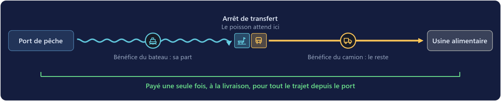

Arrêts et ordres
Où va un véhicule et ce qu'il y fait.
Un véhicule visite ses arrêts dans l'ordre, puis recommence depuis le premier.
- À chaque arrêt, il décharge seulement ce que cette station accepte. C'est là que tu es payé. Puis il charge ce qui attend.
- La cargaison non acceptée reste à bord, sauf si l'arrêt est un transfert (voir plus bas).
- Les trains font demi-tour en bout de ligne : une simple ligne d'un bout à l'autre suffit.
- Ajoute, retire et réordonne les arrêts à tout moment dans la fenêtre du véhicule.
Choisir sur la carte
- Appuie sur Choisir sur la carte dans la fenêtre d'achat ou dans celle d'un véhicule. La fenêtre s'écarte.
- Clique sur tes stations l'une après l'autre. Chaque clic ajoute un arrêt, et la barre du haut les liste.
- Annuler retire le dernier arrêt.
- La sélection reste active jusqu'à ce que tu appuies sur Terminé ou Esc.
- Si tu ne peux pas utiliser une station, la note à côté de la souris dit pourquoi.
Chargement complet
Chaque arrêt a une case Chargement complet dans la fenêtre du véhicule : le véhicule y attend d'être plein. Utilise-la là d'où vient la cargaison, jamais là où elle est livrée.
Transferts
Une cargaison peut changer de véhicule en chemin. Par exemple, du poisson d'un port de pêche doit traverser la mer en bateau, puis continuer en camion vers une usine alimentaire à l'intérieur des terres :


- Construis un port sur l'autre rive et un arrêt juste à côté, pour qu'ils forment une seule station.
- Donne au bateau le port du port de pêche et cette station, et coche Transfert sur le deuxième arrêt (dans la fenêtre d'achat ou celle du bateau).
- Achète des camions qui vont de cette station à l'usine alimentaire.
- À un arrêt de transfert, un véhicule dépose la cargaison que l'arrêt n'accepte pas. Elle y attend tes autres véhicules, qui la prennent avant toute autre cargaison du même type.
- Tes véhicules peuvent aussi charger la cargaison en transfert depuis une autre de tes gares située à 3 cases ou moins, mesurées entre les cases les plus proches des deux gares. Cherche Gares proches pour le transfert dans la fenêtre de la gare. Laisse Transfert désactivé à l'arrêt de chargement.
- Tu es payé une seule fois, à la livraison, pour tout le trajet depuis le premier chargement.
- Le bénéfice du premier véhicule montre sa part de ce tarif, et celui du dernier le reste : tu vois ainsi ce que rapporte chaque étape.
- Un véhicule ne reprend jamais la cargaison qu'il a déposée à son propre arrêt de transfert.
Déchargement seul, ne pas charger, passer par le dépôt
Le petit menu à côté de la case Transfert d'un arrêt propose trois autres ordres. Le bouton affiche une icône pour chacun de ceux qui sont actifs.
- Déchargement seul : tout est déchargé. Ce que la station accepte est livré et payé ; le reste y est laissé en transfert. Rien n'est chargé.
- Ne pas charger : livre ce que la station accepte, mais ne charge rien, pour que le véhicule garde sa place pour un arrêt suivant.
- Passer par le dépôt : après l'arrêt, le véhicule passe par ton dépôt le plus proche, quelle que soit la distance, pour une révision et tout changement de cargaison commandé. Les bateaux et les avions sont entretenus à leurs stations.
- Un arrêt ne peut pas être Déchargement seul et Chargement complet à la fois, et Ne pas charger est désactivé tant que l'un des deux est coché. Sur une ligne, ces ordres valent pour tous ses véhicules.
Véhicules perdus
Quand un véhicule se perd, un message le signale : clique dessus pour ouvrir le véhicule. Quand plusieurs se perdent en même temps, le message ouvre Problèmes.
Un véhicule qui affiche Perdu ne trouve pas de chemin vers son prochain arrêt. Il continue d'essayer ; répare la route ou la voie et il repart.
Un arrêt dont la station a été démolie est marqué Démoli dans la fenêtre du véhicule. Ajoute un autre arrêt et il sera retiré de l'itinéraire.
Changer de cargaison
- Appuie sur Changer de cargaison à côté de la barre de chargement dans la fenêtre du véhicule, choisis ce qu'il doit transporter et confirme.
- Le véhicule livre ce qu'il transporte à son prochain arrêt, ne charge rien et va dans un dépôt, où le changement est fait. Les bateaux et les avions sont changés à cet arrêt.
- Tant que ce n'est pas fait, tu peux annuler le changement et récupérer ton argent.
- Le véhicule garde ses ordres, son âge et son historique.
- Un train peut aussi gagner, perdre ou mélanger des wagons. Convertir un wagon coûte 975 $ et un nouveau 6 500 $ ; un wagon retiré rapporte ce qu'il vaut encore.
- Tout autre véhicule paie 15 % de son prix pour le changement.
- La cargaison à bord qui ne tient plus est perdue.
Dans la fenêtre du véhicule
| Bouton | À quoi ça sert |
|---|---|
| Suivre | La caméra reste sur le véhicule. |
| Arrêter | L'arrête à la prochaine station ; appuie à nouveau pour le faire repartir. |
| Trains seulement : le fait repartir en sens inverse là où il est et l'envoie vers l'un de ses arrêts qu'il peut atteindre par là, ou sinon vers un dépôt. | |
| Cloner | En achète un autre avec les mêmes ordres. |
| Renouveler | L'échange contre un neuf du même modèle. |
| Vendre | Clique deux fois. Tu récupères sa valeur actuelle. |